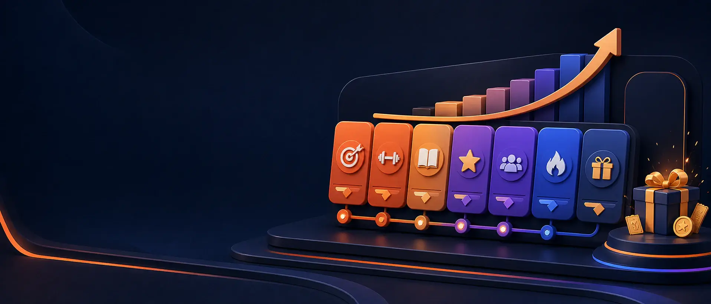

连续完成，奖励叠加
每日任务合计 140 积分，阶段奖励最高 180 积分。
连续 3 天+30积分
连续 5 天+50积分
连续 7 天+100积分
全部完成320积分
你的七日路线
选择一天查看任务。第三天已解锁，完成后将开启下一站。
DAY01
已完成
浏览 3 条内容
看完 3 条社区内容，发现值得收藏的创作灵感。
- 任务奖励
- +10 积分
- 完成进度
- 3 / 3
DAY02
已完成
收藏一条作品
在内容详情中收藏一条喜欢的 AI 作品。
- 任务奖励
- +10 积分
- 完成进度
- 1 / 1
DAY03
今日任务
复制一个 Prompt
在模板库中查看并复制一条可复用的 Prompt。
- 任务奖励
- +10 积分
- 完成进度
- 0 / 1
DAY04
未解锁
发布一条 AI 作品
进入 AIGC 轻创作，发布你的第一条 AI 作品。
- 任务奖励
- +20 积分
- 完成进度
- 0 / 1
DAY05
未解锁
参与生图挑战
参加 AI 生图创作挑战，提交一张主题作品。
- 任务奖励
- +20 积分
- 完成进度
- 0 / 1
DAY06
未解锁
分享一条作品
从作品详情发起分享，让更多人看见好创意。
- 任务奖励
- +20 积分
- 完成进度
- 0 / 1
DAY07
未解锁
完成一次兑换
使用积分兑换一次 AI 商城权益，完成七日成长。
- 任务奖励
- +50 积分
- 完成进度
- 0 / 1